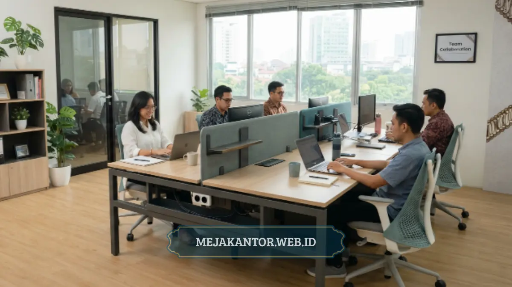

Partisi workstation PWS-06 adalah unit meja kerja berkonfigurasi enam posisi duduk yang disusun dalam satu unit kompak dengan partisi pembatas antarposisi. Model ini banyak dipilih kantor berskala kecil hingga menengah yang ingin memaksimalkan kapasitas staff tanpa memperluas ruangan.
- PWS-06 dirancang untuk menampung enam posisi kerja dalam satu unit terintegrasi.
- Konfigurasi ini umumnya berbentuk cluster dua-dua-dua atau tiga-tiga berhadapan.
- Partisi antarposisi membantu menjaga privasi kerja tanpa menyita banyak ruang.
- Cocok untuk ruangan terbatas yang tetap membutuhkan kapasitas staff cukup banyak.
- Perlu mempertimbangkan jarak antarunit dan jalur sirkulasi sebelum memutuskan pembelian.
Apa Itu Partisi Workstation PWS-06
Partisi workstation PWS-06 adalah rangkaian meja kerja modular untuk enam staff yang disusun dalam satu unit dengan pembatas atau partisi di antara masing-masing posisi duduk. Kode "PWS" pada penamaan produk umumnya merujuk pada singkatan Partition Workstation.
Sedangkan angka "06" menunjukkan jumlah posisi kerja yang dapat ditampung dalam satu unit, yaitu enam staff. Konsep ini dirancang untuk kantor yang membutuhkan efisiensi ruang namun tetap ingin memberikan batas privasi kerja bagi setiap karyawan.
Secara umum, unit workstation dengan konfigurasi enam posisi disusun dalam pola berhadapan, misalnya tiga meja di satu sisi berhadapan dengan tiga meja di sisi lainnya, dengan partisi tegak di antara setiap posisi duduk. Pola ini memungkinkan interaksi tim tetap terjaga melalui celah komunikasi, sementara partisi tetap memberikan batas visual yang membantu fokus kerja individu.
Bagaimana Konfigurasi Umum Workstation 6 Staff Seperti PWS-06
Konfigurasi umum workstation enam staff biasanya berupa pola dua baris berhadapan dengan tiga posisi di masing-masing sisi, atau pola cluster dua-dua-dua yang membentuk kelompok kecil. Pada pola dua baris berhadapan, staff duduk saling berhadapan dengan partisi tegak di tengah sebagai pembatas pandangan langsung.
Pola ini memudahkan komunikasi antaranggota tim yang berada di sisi yang sama, sekaligus tetap menjaga privasi dari sisi seberang berkat adanya partisi. Sementara itu, pola cluster dua-dua-dua membagi enam posisi menjadi tiga kelompok kecil berisi dua meja yang saling berdekatan.
Model ini cocok diterapkan pada tim yang terbagi menjadi sub-kelompok kerja, misalnya tiga pasang staff yang menangani tugas berbeda namun tetap berada dalam satu ruangan. Pemilihan konfigurasi sebaiknya disesuaikan dengan alur kerja tim, bukan semata-mata mengikuti bentuk ruangan yang tersedia, agar hasil penataan benar-benar mendukung efisiensi kerja sehari-hari.

Apakah PWS-06 Cocok untuk Kantor dengan Ruang Terbatas
Workstation PWS-06 pada umumnya cocok untuk ruang terbatas karena konfigurasinya yang terintegrasi dalam satu unit dapat lebih menghemat ruang dibandingkan menempatkan enam meja individual secara terpisah. Dibandingkan menyusun enam meja kerja berdiri sendiri-sendiri, unit workstation terintegrasi seperti PWS-06 umumnya lebih efisien.
Hal ini karena partisi dan struktur mejanya sudah dirancang menyatu, sehingga tidak memerlukan jarak tambahan antarmeja seperti pada meja lepas biasa. Hal ini membuat unit seperti PWS-06 sering menjadi pilihan bagi kantor dengan luas ruangan terbatas namun tetap membutuhkan kapasitas kerja untuk enam staff sekaligus.
Meski demikian, tingkat kekompakan tetap bergantung pada dimensi ruangan aktual dan jarak sirkulasi yang tersisa setelah unit ditempatkan. Sebelum memutuskan, sebaiknya lakukan pengukuran ruangan secara akurat dan bandingkan dengan dimensi unit PWS-06 agar jalur gerak staff tetap nyaman dan tidak sesak.
Apa Kelebihan dan Kekurangan Workstation PWS-06 Dibanding Model Lain
Kelebihan utama PWS-06 adalah efisiensi ruang untuk kapasitas enam staff dalam satu unit, sementara kekurangannya terletak pada fleksibilitas penataan ulang yang lebih terbatas dibandingkan meja individual lepas. Dari sisi kelebihan, unit terintegrasi seperti PWS-06 memudahkan proses pemasangan karena datang dalam satu rangkaian struktur yang sudah dirancang saling terhubung.
Hal ini juga membuat tampilan ruang kerja terlihat lebih rapi dan seragam karena seluruh posisi menggunakan desain dan ukuran partisi yang sama. Namun, karena strukturnya terintegrasi, mengubah konfigurasi unit PWS-06 di kemudian hari cenderung lebih rumit dibandingkan menata ulang meja individual yang dapat dipindah secara fleksibel satu per satu.
Oleh karena itu, sebelum memutuskan pembelian, penting untuk mempertimbangkan kemungkinan perubahan jumlah staff atau tata ruang di masa mendatang. Sebagai pembanding, workstation dengan konfigurasi lebih kecil, misalnya empat posisi, umumnya menawarkan fleksibilitas penataan yang sedikit lebih baik namun kurang efisien dari sisi kapasitas dibandingkan PWS-06 untuk kebutuhan enam staff sekaligus.
Hal yang Perlu Dipertimbangkan Sebelum Memilih PWS-06
Sebelum memilih PWS-06, pertimbangkan luas ruangan aktual, kebutuhan privasi tim, rencana penambahan staff di masa depan, dan kesesuaian material partisi dengan interior kantor. Pertama, ukur luas ruangan secara akurat termasuk jarak yang dibutuhkan untuk jalur sirkulasi setelah unit ditempatkan.
Kedua, pertimbangkan tingkat privasi yang dibutuhkan tim; jika pekerjaan membutuhkan fokus tinggi, pastikan tinggi partisi pada unit PWS-06 sudah memadai untuk kebutuhan tersebut. Ketiga, pikirkan kemungkinan penambahan atau pengurangan staff di masa depan, karena struktur unit yang terintegrasi cenderung kurang fleksibel untuk direkonfigurasi.
Terakhir, sesuaikan pilihan warna dan material partisi dengan tema interior kantor secara keseluruhan agar tampilan ruang kerja tetap konsisten dan profesional.
Bagaimana Cara Merawat Partisi Workstation Agar Tetap Awet
Perawatan partisi workstation seperti PWS-06 umumnya meliputi pembersihan rutin permukaan meja dan partisi, menghindari beban berlebih pada bagian partisi, serta pengecekan berkala pada sambungan struktur unit. Permukaan meja dan partisi sebaiknya dibersihkan secara rutin menggunakan kain lembap dan cairan pembersih yang sesuai dengan jenis material finishing.
Ini penting agar permukaan tidak mudah kusam atau tergores dalam pemakaian jangka panjang. Hindari pula meletakkan beban berat secara langsung pada bagian atas partisi, karena umumnya partisi dirancang sebagai pembatas visual, bukan struktur penopang beban seperti halnya permukaan meja kerja.
Selain itu, karena unit seperti PWS-06 tersusun dari beberapa bagian yang saling terhubung, ada baiknya dilakukan pengecekan berkala pada bagian sambungan atau baut struktur. Ini untuk memastikan seluruh unit tetap kokoh dan aman digunakan dalam jangka panjang, terutama pada kantor dengan tingkat mobilitas staff yang cukup tinggi.
Partisi workstation PWS-06 menawarkan efisiensi ruang yang baik untuk kebutuhan enam staff dalam satu unit terintegrasi, menjadikannya pilihan yang relevan bagi kantor dengan ruang terbatas. Namun, kekompakannya tetap perlu diukur berdasarkan dimensi ruangan aktual, bukan sekadar asumsi umum. Pertimbangkan pula kebutuhan privasi tim dan kemungkinan perubahan jumlah staff sebelum memutuskan untuk memasang unit ini di kantor Anda.

Tim Desain Vendor Meja Kantor
Spesialis Penataan Interior Kantor. Berpengalaman dalam memberikan tips ergonomi dan memilih furnitur terbaik untuk menunjang produktivitas kerja.